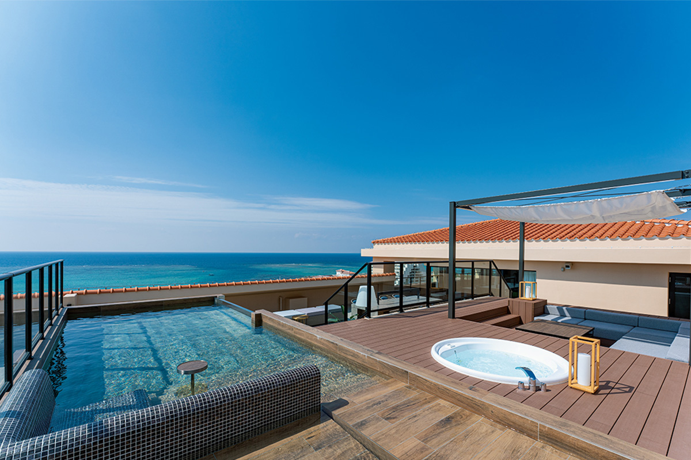
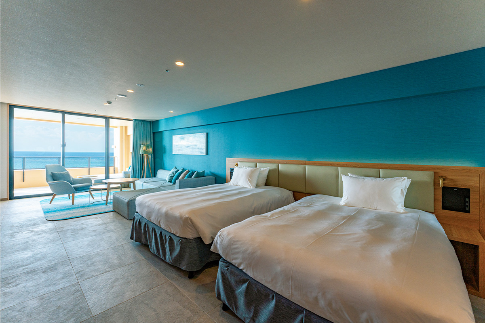
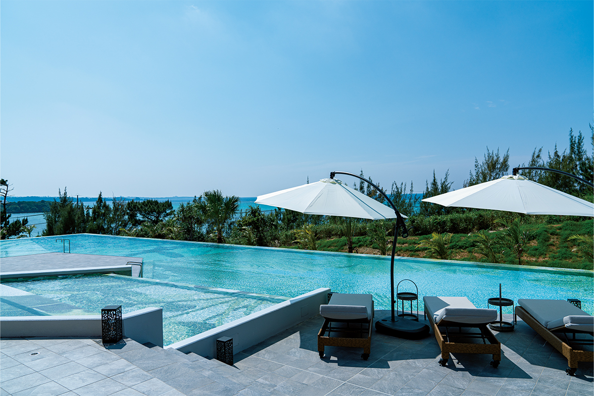
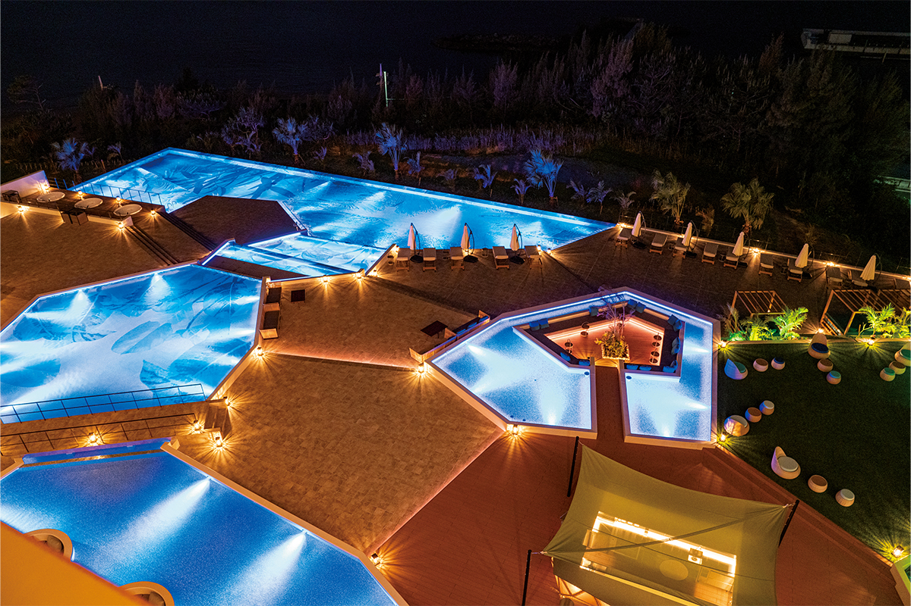
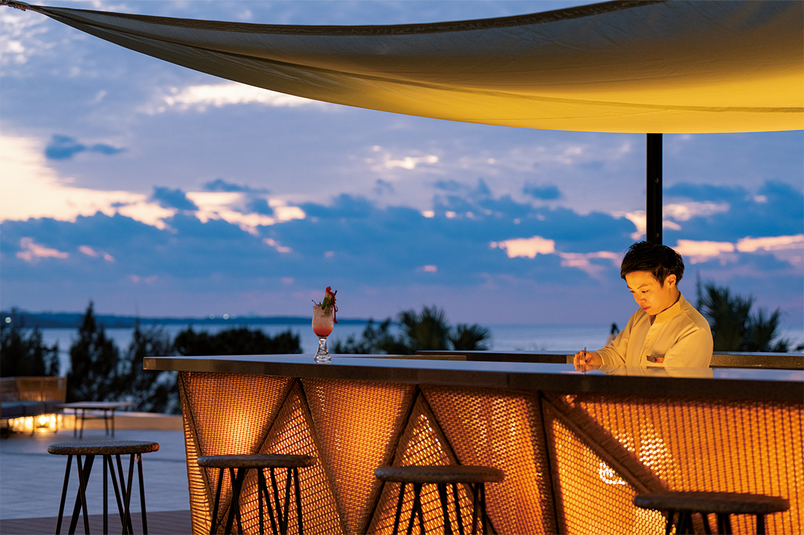
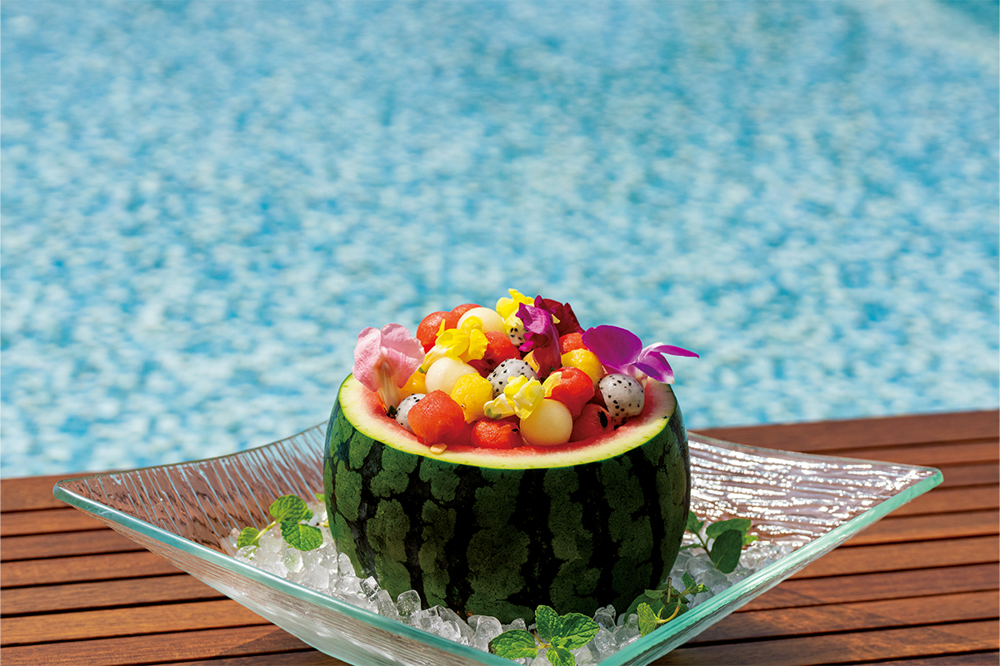
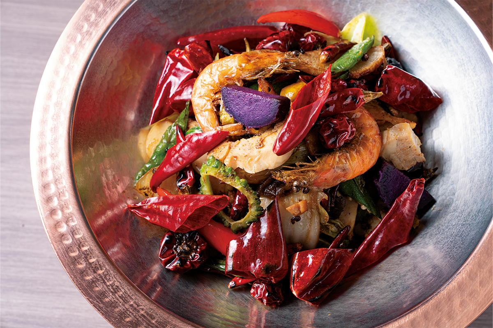
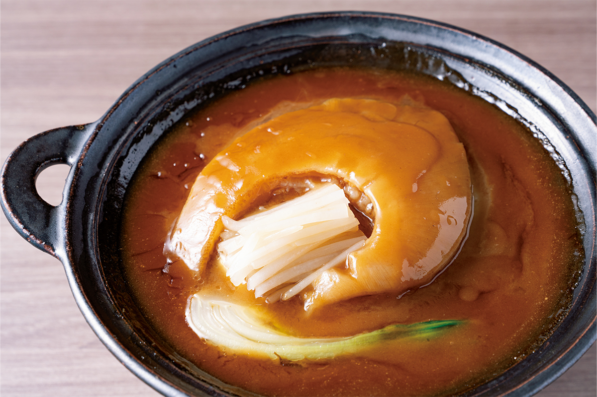

Префектура Окинава · Онна · отель
AQUASENSE Hotel & Resort в Онне: водная терраса, закаты и рюкюская китайская кухня

В апреле 2022 года на побережье села Онна полностью открылся отель AQUASENSE Hotel & Resort. Все номера смотрят на море, а главное место курорта это водная терраса, устроенная так, чтобы закат отражался в воде круглый год.
Место
Онна: коралловое море и закаты
Онна лежит почти в середине острова Окинава, на его западном берегу. С запада село омывает Восточно-Китайское море, куда каждый вечер садится солнце, с востока его окружают горы во главе с Онна-даке. Главное богатство этих мест вода: очень прозрачная, с коралловыми рифами у самого берега.
AQUASENSE Hotel & Resort построила Kato Pleasure Group, компания, которая открывает по Японии один курортный отель за другим и каждый раз старается связать его с историей и духом места. Отель на пляже в Онне задуман как курорт впечатлений, его девиз «Become One with Nature»: стать частью природы, какой больше нигде нет. Хозяева гордятся тем, что из всех номеров видно море и закат, который они называют лучшим в Японии.
Номера
Джакузи на каждом балконе
В отеле 77 номеров семи типов. На балконе каждого стоит джакузи с подогретой водой, поэтому сидеть под открытым небом приятно в любой сезон и почти в любую погоду. В четырёх люксах с бассейном есть ещё и собственный бассейн с подогревом.

Нам повезло остановиться в люксе Aqua Pool Suite на верхнем этаже, площадью 319,11 квадратного метра. Если открыть проход в соседний номер, балкон и терраса становятся общими, и тогда здесь можно спокойно жить большой семьёй или компанией друзей. Вечер течёт сам собой: сначала закат, потом коктейли, а перед ужином тихий разговор на террасе в сумерках. Одной ночи для такого номера мало, мы бы советовали остаться хотя бы на две.
Терраса
Вода, отражающая закат
Главное событие курорта это день на водной террасе первого этажа. Название отеля начинается со слова «аква», вода, и здесь с водой связано всё, причём в любое время года. Терраса площадью 2210 квадратных метров спускается уступами, как рисовые террасы, а высоту уступов рассчитали по тому, где садится солнце. Благодаря этому закат отражается в воде круглый год и с любой точки террасы. Здесь есть большие неглубокие водные зеркала и просторный бассейн.

Днём на террасе шумно и солнечно, а ночью она меняется: свет дрожит на воде, и всё вокруг выглядит как декорация. В темноте выходит на первый план и камин. Днём и ночью у террасы разные главные герои, и запоминаются оба.

На террасе работает OPEN AIR BAR с фруктовыми окинавскими коктейлями и лёгкими закусками.


Ресторан
Рюкюская китайская кухня
В ресторане «Рюкю чайниз Бон файя» готовят в стиле, который здесь назвали рюкюской китайской кухней: окинавские продукты и традиции стола соединены с приёмами китайских поваров. Вечером можно выбрать сет или заказывать блюда по меню, так что подойдёт и плотный ужин, и лёгкий.
Завтрак тоже китайский: шведский стол с рисовой кашей, димсамами и множеством холодных и горячих закусок. Сяолунбао подают прямо из пароварки, а фирменные блюда выносят в больших мисках ятимун, окинавской керамики. Мы каждый раз ждали следующей трапезы с нетерпением.


AQUASENSE Hotel & Resort
- Адрес
- префектура Окинава, уезд Кунигами, село Онна, Футяку, Куросакибару, 86-1
- Телефон
- +81 98-987-8031
- Номера
- 77, от 36 000 иен за номер (с налогом и сервисным сбором)
- Заезд / выезд
- 14:00 / 11:00
- Как добраться
- на машине около 50 минут от аэропорта Наха, на автобусе Airport Limousine около 1 часа 10 минут
Фото: Ацуси Ямахира.